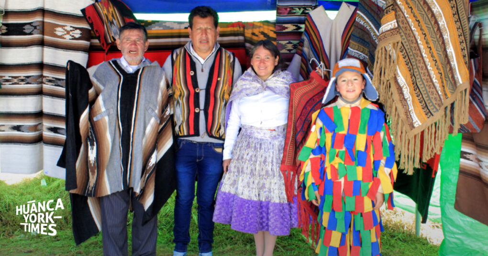

NUESTROS ARTESANOS

TRABAJO ARTESANAL
Nuestros productos son elaborados mediante técnicas tradicionales de tejido transmitidas entre generaciones.
Cada artesano aporta su experiencia y dedicación para conservar la identidad de la artesanía textil de nuestra región.